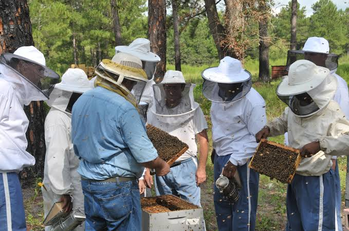
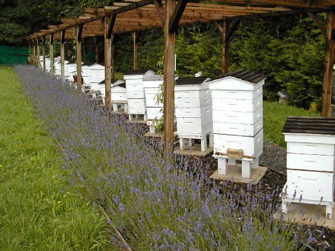
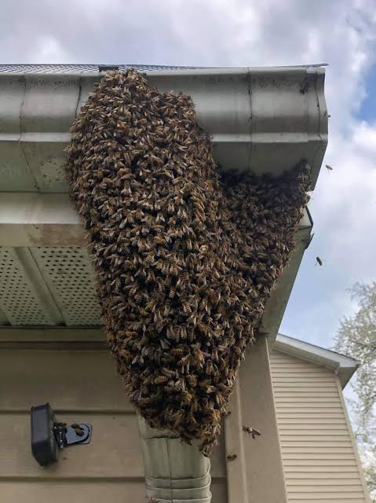

Home
Our Services
Our product
The Team
About
Contact
Home
Our Services
Our product
The Team
About
Contact
|  | EXTENSION SERVICESWe apply scientific research and new knowledge to beekeeping practices through farmer education. extension services encompasses a wider range of communication and learning activities organized for rural people |
|  | APIARY SET UP AND |
|  | BEE SWARM REMOVAL SERVICESIn summer we get many calls and questions from people with bees in their houses, outbuildings and gardens. For safety reasons we help individuals remove the bees. |